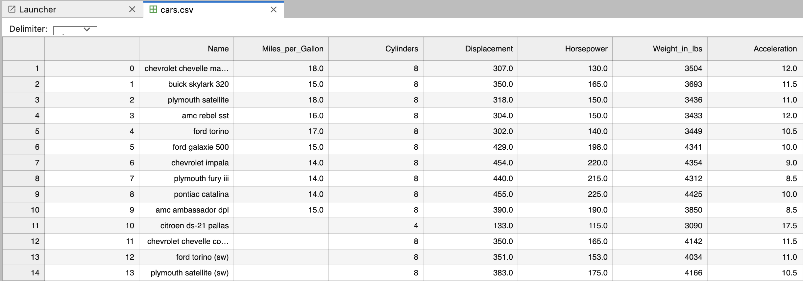
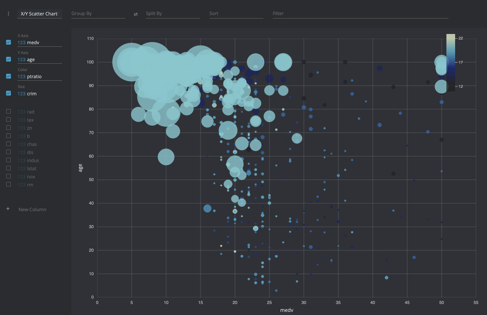
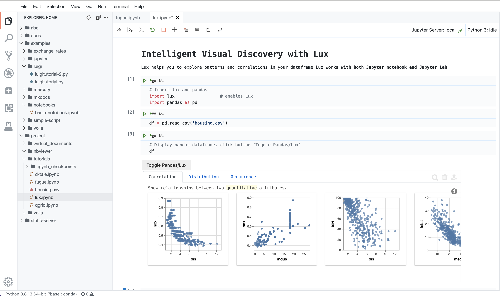
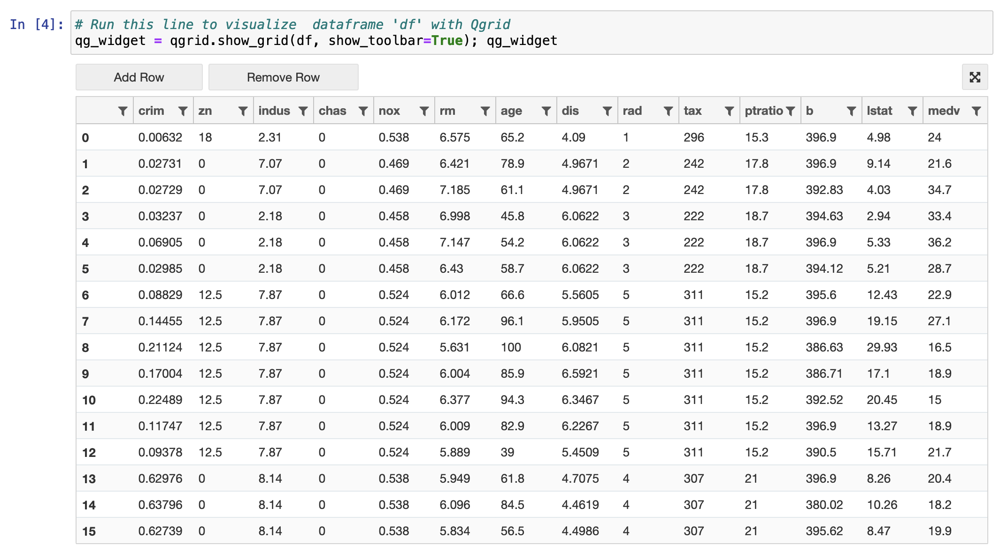
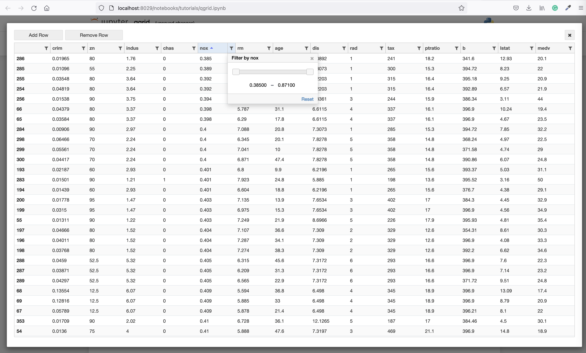
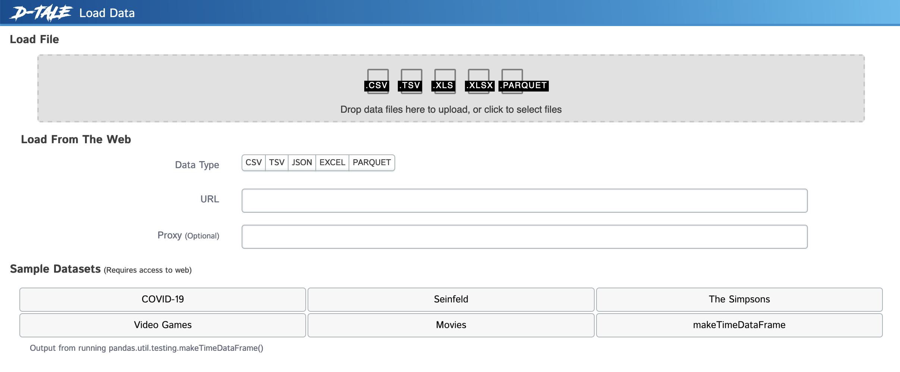
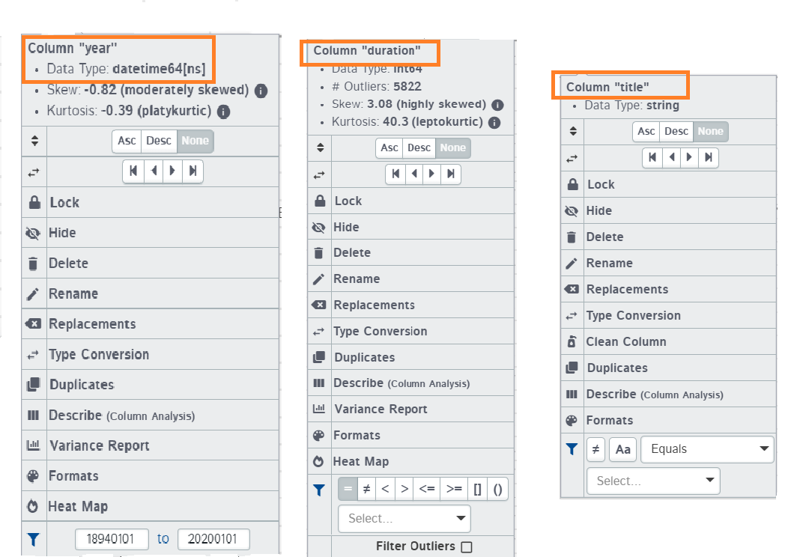
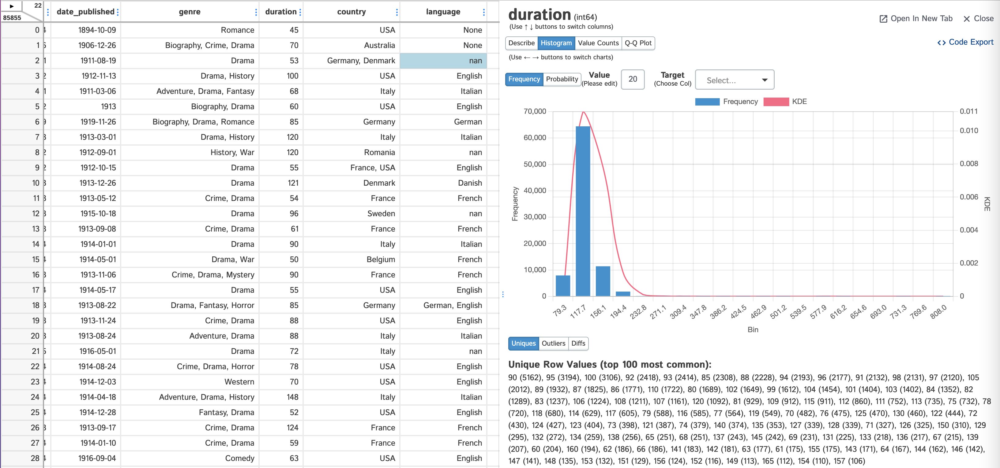
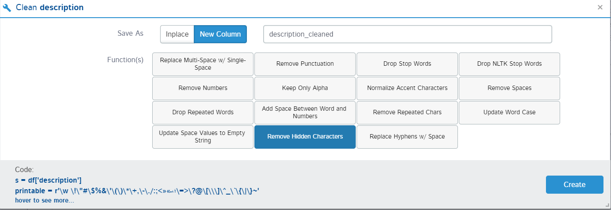
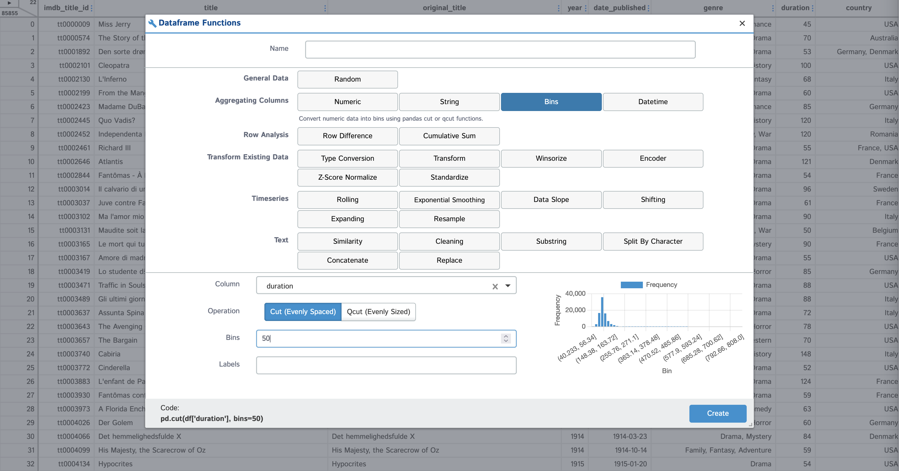

Data exploration
Data Exploration
To work with data sucessfully, it is important to be able to explore data, look on the raw table, plot charts and plot such as scatterplots, correlation tables, outlier heatmaps, etc.
Workspace has tools to explore raw datasets. It also has configured extensions and widgets for Jupyter n otebooks and Jupyterlab for data exploration and discovery.
To start with, copy tutorial notebooks into the project forlder.
cp -r /home/examples/tutorials /home/project
Jupyter Lab
You can view data files, such as .csv in a nice tabular form directly in Jupyter lab. Go to Jupyter Lab from the Quickstart page, and open file 'cars.csv' in folder 'tutorials' from Jupyter Lab

You can explore notebook 'cars-jupyter.ipynb' to see how to import and export data from .csv files.
Data Preview
Data Preview - is a VS-Code extension which provides tabular view for csv files and allows interactive exploration of such files.

It is very convenient for initial exploration of the csv files before loading them to pandas dataframes.
Lux
By simply printing out a dataframe in a Jupyter notebook, Lux recommends a set of visualizations highlighting interesting trends and patterns in the dataset. Visualizations are displayed via an interactive widget that enables users to quickly browse through large collections of visualizations and make sense of their data.

To try Lux open in Jupyter, Jupyterlab or VS-Code small example notebook tutorials/lux.ipynb.
Follow the instruction and execute notes

QGrid
Qgrid is a Jupyter notebook widget which uses SlickGrid to render pandas DataFrames within a Jupyter notebook. This allows you to explore your DataFrames with intuitive scrolling, sorting, and filtering controls, as well as edit your DataFrames by double clicking cells.
NOTE: Qgrid works only i Jupyter notebooks, and is not working with current version of Jupyterlab.
Open in Jupyter notebook example notebook tutorials/qgrid.ipynb and run cells one-by-one

QGrid is extremely convenient if you need to work with multiple data frames, or need to apply complex transformations to the same dataframe. You can vizualise every step of thransformation, look on the whole dataset, filter and order columns.

D-Tale
D-Tale - is a comprehensive solution that allows to explore and analyze raw data files, as well as pandas dataframes. D-Tale is extremely powerful, is great toolset to visualise, explore and study the datasets.
Open D-Tale from the Quickstart page. Upload your data file, or use example dataset to start with

Load the Movies Sample dataset. Dataset will be displayed as an iteractive table. All the cells of this table can be edited, and you can make direct changes to the values just like in excel.

Whenever you click on the column header, you will get a list of options depending upon the type of data the column contains.

Among other actions you can sort, order and filter table

Highlighters are used to highlight some sections of the dataset. Like we use stylers in pandas to bring out the odd values, highlighters do the same job. You can highlight missing values, Data types, Outliers, and range. The example below shows how the missing values and outliers have been highlighted

Among data exploration features you can detect outliers, find patterns and correlations, detect missinng values, generate comprehensive column reports

With D-Tale you can perform certain data transformation steps, such as change types, clean data, remove duplicates, creation of new columns

Select "Dataframe Functions" from the main D-Tale menu, in order to create new column

D-Tale Charts
D-Tale Charts is somewhat hidden among other D-Tale options, but it is an awesome feature for analytical exploration and visualisation of the dataset or pandas dataframe. You can build complex charts interactively. This can be used for reporting or visual patterns and trends discovery
To open D-Tale Charts, select "Charts" from the main D-Tale menu

Pandas data frames in D-Tale
D-Tale can visualize pandas dataframes too. Open tutorial notebook tutorials/d-tale.ipynb, follow the instructions and
execute cells.
After you execute cell which containe the line
dtale.show(df, host="0.0.0.0", port=8038, force=True) # host and port are important!
open Quickstart page, go to "My Apps" and open app on port 8038. You will see the D-Tale, loaded with your pandas dataframe